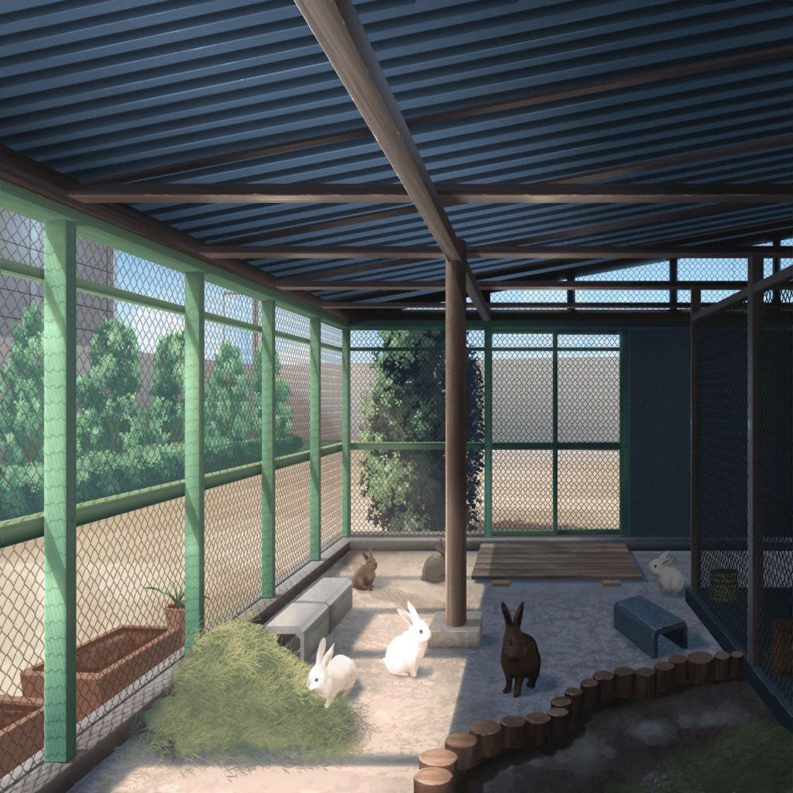

花咲川女子学園 中等部 飼育小屋
たえ
ほら、みんな。
おうちについたよ
千聖
ふふ、気持ちよさそうに、
ケージから飛び出していったわね
有咲
１日広いところを走り回ってたから、ちょっと申し訳ない
気もしてくるな
花音
そういえば、そうだね。
うさぎさん達、ごめんね〜
たえ
この子達の家はここだから、狭くても家に戻ってこれて
安心してるはずだよ
千聖
さて……本当にこれで全羽いるのかしら？
花音
まだ、どこか逃げてたりして……
たえ
えっと……
たえ
うん、全員戻って来てる
花音
えっ、見ただけでわかるの？
有咲
さすがおたえ……
女生徒
先輩方、本当にありがとうございました。
おかげで助かりました……！
たえ
いい運動になった
有咲
私はへとへとだけどなー
千聖
私もちょっと疲れちゃった。
あちこち動き回っていたものね
たえ
うさぎ達、小屋の中を
ピョンピョン飛び跳ねてる。
みんな、元気そうでよかった
たえ
こんなに元気なら、
きっとこの後のおやつも美味しいと思う
有咲
おやつ？
そろそろ、食事の時間なのか？
女生徒
はい、そうなんです
有咲
へー……
たえ
有咲、おやつ、あげたいの？
有咲
べ、別にそういうわけじゃ……
女生徒
あ、でしたら、どうぞ！
先輩方にはご迷惑をおかけしましたし、
そのお礼になれば
イヴ
私、あげてみたいです！
花音
わ、私も……
たえ
じゃあ、みんなであげよう
花音
わっ、おやつ持ったら、
すぐに集まってきました……！
千聖
うさぎって、
本当にぶぅぶぅ鳴くのね？
有咲
あ、おい、背中に乗るな！
イヴ
なかなか手強い相手でした。
これからは強敵と書いて、ともだちです！
たえ
ふふ、みんな可愛い
たえ
ほら、ウサッピーくんも、
ぶーちゃんも、焦らないでもあげるから
たえ
順番だよ、順番
有咲
つかおたえ。新曲の曲作りのこと、
忘れてねーだろうな？
たえ
んー……うさぎの曲、なんでどう？
ぴょんぴょん♪ たのしそう♪
有咲
はあ……それ、今思いついたやつだろ……
千聖
Pastel＊Palettesも、新しい衣装にうさぎのモチーフをいれて
もらおうかしら。だって、こんなにかわいいんだもの♪
イヴ
ふわふわ、モフモフ……素敵な衣装になりそうですね〜
たえ
うん、かわいいと思います
花音
うさぎさんの曲にうさぎさんの衣装……
うさぎさんがテーマのバンドがあったら、おもしろいね？
たえ
きっとバンドの名前は、
『不思議の国の有咲』だね
有咲
なんで私が入ってんだよ！？
イヴ
アリサさんのウサギさん、
きっと可愛いです！
有咲
絶対着ねぇ！
千聖
『不思議の国の有咲』……
ふふ、面白そうね♪
有咲
だから、面白くないですって！
私は絶対そんなバンド組まないからな～！